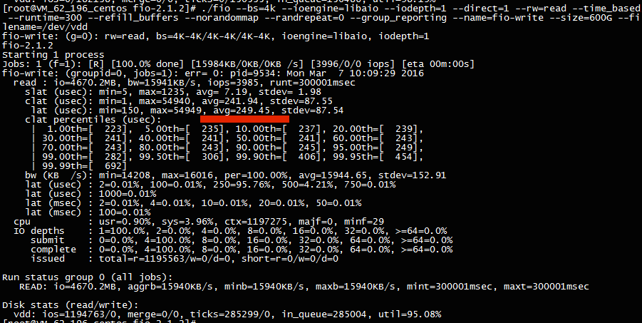
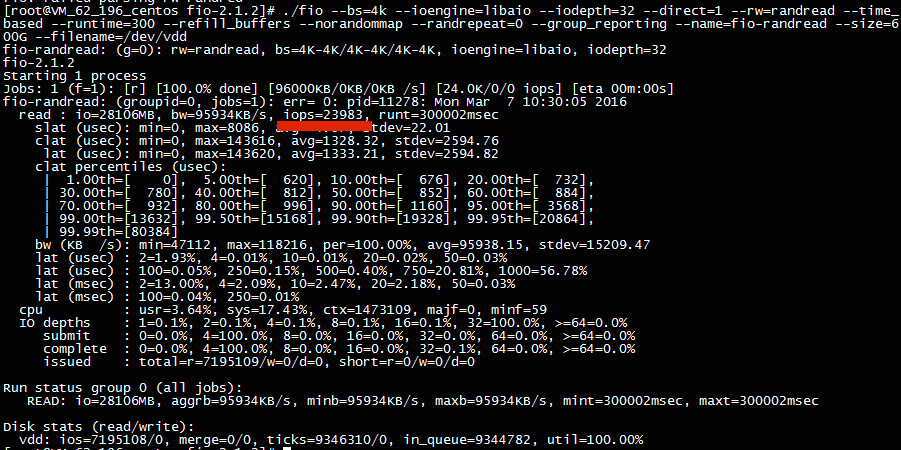

lvm2
- # yum install lvm2 -y
- # pvcreate /dev/sdb
- # vgcreate vg0 /dev/sdb
- # lvcreate -L 204800M -n lv0 vg0
- # mkfs.ext4 /dev/vg0/lv0
- 扩容：
- # pvcreate /dev/sde
- # vgextend vg0 /dev/sde
- # lvextend -L +992G /dev/vg0/lv0
- # resize2fs /dev/mapper/vg0-lv0
- # xfs_growfs /dev/mapper/vg0-lv0
- # 如果文件系统使用xfs需要 xfs_growfs进行扩容要,否则报如下错误：
- [root@es12 ~]# resize2fs /dev/mapper/vg0-lv0
- resize2fs 1.42.9 (28-Dec-2013)
- resize2fs: Bad magic number in super-block while trying to open /dev/mapper/vg0-lv0
- Couldn't find valid filesystem superblock.
FIO 测试工具
FIO是测试IOPS非常好的工具，用来对硬件进行压力测试和验证。建议使用libaio的I/O引擎进行测试，请用户自行安装FIO和Libaio。 不同场景的测试公式基本一致，只有3个参数（读写模式，ipdepth，blocksize）的区别。下面举例说明使用block size为4k，iodepth为1来测试顺序读性能的命令。 命令如下：
- fio --bs=4k --ioengine=libaio --iodepth=1 --direct=1 --rw=read --time_based --runtime=600 --refill_buffers --norandommap --randrepeat=0 --group_reporting --name=fio-read --size=100G --filename=/dev/sdb
参数说明：
注：
- --filename=/dev/vda 不能指定系统盘，容易出现异常， 可以使用--filename=/tmp/test
- --size=10G 这个值小于当前磁盘空余空间。
- block=4k iodepth=32 能反映峰值IOPS性能。

常见用例如下：
- block=4k iodepth=1 随机读测试，能反映磁盘的时延性能；
- block=128K iodepth=32 能反映峰值吞吐性能 ;
- block=4k iodepth=32 能反映峰值IOPS性能。
下图为SSD云硬盘的测试性能截图：
 